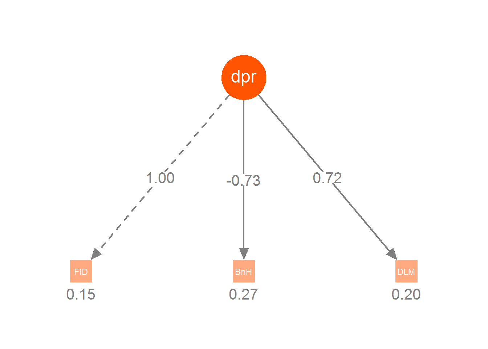
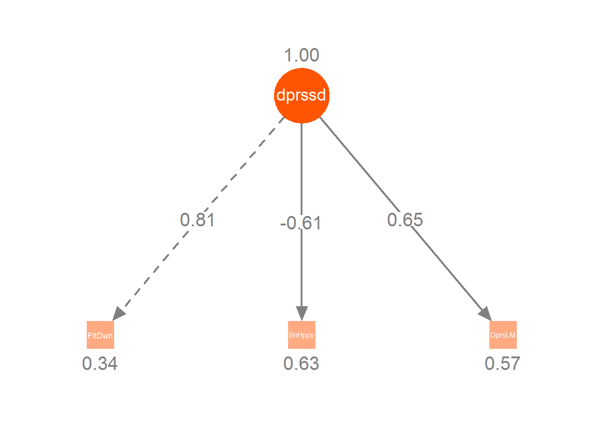

Latent Variables
Not everything we want to measure comes with an obvious yardstick. If one wants to measure something like a person’s happiness, what would they have at their disposal?
- Are they smiling?
- Did they just get a pay raise?
- Are they interacting well with others?
- Are they relatively healthy?
Any of these might be useful as an indicator of their current state of happiness, but of course none of them would tell us whether they truly are happy or not. At best, they can be considered imperfect measures. If we consider those and other indicators collectively, perhaps we can get an underlying measure of something we might call happiness, contentment, or some other arbitrary but descriptive name.
Despite how they are typically used within psychology, education and related fields, the use of latent variable models are actually seen all over, and in ways that may have little to do with what we will be mostly focusing on here15. Broadly speaking, factor analysis can be seen as a dimension reduction technique, or as an approach to modeling measurement error and understanding underlying constructs. We will give some description of the former while focusing on the latter.
Dimension Reduction/Compression
Many times we simply have the goal of taking a whole lot of variables, reducing them to much fewer, but while retaining as much information about the originals as possible. For example, this is an extremely common goal in areas of image and audio compression. Statistical techniques amenable to these approaches are commonly referred to as matrix factorization.
Principal Components Analysis
Probably the most commonly used factor-analytic technique is principal components analysis (PCA). It seeks to extract components from a set of variables, with each component containing as much of the original variance as possible. Components can be seen as a linear combination of the original variables.
PCA works on a covariance/correlation matrix, and it will return as many components as there are variables that go into it, each subsequent component accounting for less variance than the previous component, and summing up to 100% of the total variance in the original data. With appropriate steps, the components can completely reproduce the original correlation matrix. However, as the goal is dimension reduction, we only want to retain some of these components, and so the reproduced matrix will not be exact. This however gives us some sense of a goal to shoot for, and the same idea is also employed in factor analysis/SEM, where we also work with the covariance matrix and prefer models that can closely reproduce the original correlations seen with the observed data.
Visually, we can display PCA as a graphical model. Here is one with four components/variables. The size of the components represents the amount of variance each accounts for.
Let’s see an example. The following regards a correlation matrix16 of 24 psychological tests given to 145 seventh and eight-grade children in a Chicago suburb by Holzinger and Swineford. We’ll use the psych package, and to use the principal function, we provide the data (available via the psych package), specify the number of components/factors we want to retain, and other options (in this case, the rotated solution will be a little more interpretable17). We will use the psych package here as it gives us a little more output than standard PCA packages and functions, and one that is more consistent with the factor analysis technique we’ll spend time with later. While we will use lavaan for factor analysis to be consistent with the SEM approach, the psych package is a great tool for standard factor analysis, assessing reliability and other fun stuff.
library(psych)
pc = principal(Harman74.cor$cov, nfactors=4, rotate='varimax')
pcPrincipal Components Analysis
Call: principal(r = Harman74.cor$cov, nfactors = 4, rotate = "varimax")
Standardized loadings (pattern matrix) based upon correlation matrix
RC1 RC3 RC2 RC4 h2 u2 com
VisualPerception 0.16 0.71 0.23 0.14 0.60 0.40 1.4
Cubes 0.09 0.59 0.08 0.03 0.37 0.63 1.1
PaperFormBoard 0.14 0.66 -0.04 0.11 0.47 0.53 1.2
Flags 0.25 0.62 0.09 0.03 0.45 0.55 1.4
GeneralInformation 0.79 0.15 0.22 0.11 0.70 0.30 1.3
PargraphComprehension 0.81 0.18 0.07 0.21 0.73 0.27 1.2
SentenceCompletion 0.85 0.15 0.15 0.06 0.77 0.23 1.1
WordClassification 0.64 0.31 0.24 0.11 0.57 0.43 1.8
WordMeaning 0.84 0.16 0.06 0.19 0.78 0.22 1.2
Addition 0.18 -0.13 0.83 0.12 0.76 0.24 1.2
Code 0.18 0.05 0.63 0.37 0.57 0.43 1.8
CountingDots 0.02 0.17 0.80 0.05 0.67 0.33 1.1
StraightCurvedCapitals 0.18 0.41 0.62 0.03 0.59 0.41 1.9
WordRecognition 0.23 -0.01 0.06 0.68 0.52 0.48 1.2
NumberRecognition 0.12 0.08 0.05 0.67 0.48 0.52 1.1
FigureRecognition 0.06 0.46 0.05 0.58 0.55 0.45 1.9
ObjectNumber 0.14 0.01 0.24 0.68 0.54 0.46 1.4
NumberFigure -0.02 0.32 0.40 0.50 0.51 0.49 2.7
FigureWord 0.14 0.25 0.20 0.42 0.30 0.70 2.4
Deduction 0.43 0.43 0.09 0.30 0.47 0.53 2.8
NumericalPuzzles 0.18 0.42 0.50 0.17 0.49 0.51 2.5
ProblemReasoning 0.42 0.41 0.13 0.29 0.45 0.55 3.0
SeriesCompletion 0.42 0.52 0.25 0.20 0.55 0.45 2.7
ArithmeticProblems 0.40 0.14 0.55 0.26 0.55 0.45 2.5
RC1 RC3 RC2 RC4
SS loadings 4.16 3.31 3.22 2.74
Proportion Var 0.17 0.14 0.13 0.11
Cumulative Var 0.17 0.31 0.45 0.56
Proportion Explained 0.31 0.25 0.24 0.20
Cumulative Proportion 0.31 0.56 0.80 1.00
Mean item complexity = 1.7
Test of the hypothesis that 4 components are sufficient.
The root mean square of the residuals (RMSR) is 0.06
Fit based upon off diagonal values = 0.97First focus on the last portion of the output where it says SS loadings . The first line is the sum of the squared loadings for each component (in this case where we are using a correlation matrix, summing across all 24 components would equal the value of 24). The Proportion Var tells us how much of the overall variance the component accounts for out of all the variables (e.g. 4.16 / 24 = 0.17). The Cumulative Var tells us that all 4 components make up over half the variance. The others are the same thing just based on the four components rather than all 24 variables. We can see that each component accounts for a decreasing amount of variance.
Loadings in this scenario represent the estimated correlation of an item with its component, and provide the key way in which we interpret the factors. However, we have a lot of them, and rather than interpret that mess in our output, we’ll look at it visually. In the following plot, stronger loadings are indicated by blue, and we can see the different variables associated with different components.
Interpretation is the fun but commonly difficult part. As an example, we can see PC2 as indicative of mathematical ability, but in general this isn’t the cleanest result.
Some explanation of the other parts of the output:
h2: the amount of variance in the item explained by the (retained) components. It is the sum of the squared loadings (a.k.a. communality).u2: 1 - h2com: A measure of complexity. A value of 1 might be seen for something that loaded on only one component, and zero otherwise (a.k.a. perfect simple structure)
We can get a quick graphical model display as follows:
## fa.diagram(pc, cex=.5)PCA is probably not the best choice in this scenario, nor likely, is a 4 factor solution. One of the primary reasons is that this graphical model assumes the observed variables are measured without error. In addition, the principal components do not correlate with one another, but it seems likely that we would want to allow the latent variables to do so (a different rotation would allow this). However, if our goal is merely to reduce the 24 items to a few that account for the most variance, this would be a standard technique.
Other Matrix Factorization Techniques
Before leaving PCA for factor analysis of the sort we’ll mostly be concerned with, I’ll mention other matrix factorization techniques that might be of use depending on your data situation.
- SVD: singular value decomposition. Works on a raw data matrix rather than covariance matrix, and is still a very viable technique that may perform better in a lot of situations relative to fancier latent variable models, and other more recently developed techniques. Variations on SVD are behind some recommender systems of the sort you come across at Amazon, Netflix etc.
- ICA: Independent components analysis. Extracts non-normal, independent components. The primary goal is to create independent latent variables.
- Generalized PCA: PCA techniques for different types of data, e.g. binary data situations.
- PC Regression: combining PCA with regression in one model.
- NMF: non-negative matrix factorization. Applied to positive valued matrices, produces positive valued factors. Useful, for example, when dealing with counts.
- LSI: Latent Semantic Indexing, an early form of topic modeling.
- Many others.
Factor Analysis
Factor analysis is a general technique for uncovering latent variables within data. While initially one might think it similar to PCA18, one difference from PCA is that the goal is not to recover maximum variance with each factor. In addition, we will move beyond factor analysis as a dimension reduction technique (and fully ‘exploratory’ technique, see below), and instead present it as an approach with a potentially strong theoretical underpinning, and one that can help us assess measurement error, ultimately even leading to regression models utilizing the latent variables themselves.
So let us turn to what are typically called measurement models within SEM. The underlying model can be thought of as a case in which the observed variables, in some disciplines referred to as indicators (or manifest variables) of the latent construct , are caused by the latent variable. The degree to which the observed variables correlate with one another depends in part on how much of the underlying (presumed) latent variable they reliably measure19.
For each indicator we can think of a regression model as follows, where \(\beta_0\) is the intercept and \(\lambda\) the regression coefficient that expresses the effect of the latent variable \(F\) on the observed variable \(X\) (I do not note the error).
\[X = \beta_0 + \lambda F\]
We will almost always have multiple indicators, and often multiple latent variables. Some indicators may be associated with multiple factors.
\[\begin{aligned} X_1 &= \beta_{01} + \lambda_{11} F_1 + \lambda_{21} F_2 \\ X_2 &= \beta_{02} + \lambda_{12} F_1 + \lambda_{22} F_2 \\ X_3 &= \beta_{03} + \lambda_{13} F_1 \end{aligned}\]
It is important to understand this regression model, because many who engage in factor analysis seemingly do not, and often think of it the other way around, where the observed variables cause the latent. In factor analysis, the \(\lambda\) coefficients are called loadings (as they were in PCA), but are interpreted as any other regression coefficient- a one unit change in the latent variable results in a \(\lambda\) change in the observed variable. Most factor models assume that, controlling for the latent variable, the observed variables are independent (recall our previous discussion on conditional independence in graphical models), though this is sometimes relaxed. If only one factor is associated with an item and does not correlate with any other factors, then we have a simple regression setting where the standardized coefficient is equal to the correlation between the latent variable and the observed.
Exploratory vs. Confirmatory
An unfortunate and unhelpful distinction in some disciplines (esp. psychology) is that of exploratory vs. confirmatory factor analysis (and even exploratory SEM). In any regression analysis, there is a non-zero correlation between any variable and some target variable. We don’t include everything for theoretical (and even practical) reasons, which is akin to fixing its coefficient to zero, and here it is no different. Furthermore, most modeling endeavors could be considered exploratory, regardless of how the model is specified. As such, this distinction doesn’t tell us anything about the model, and is thus unnecessary in my opinion.
As an example, in the above equations \(X_3\) is not modeled by \(F_2\), which is the same as fixing the \(\lambda_{23}\) coefficient for \(F2\) to 0. However, that doesn’t tell me whether the model is exploratory or not, and yet that is all the distinction refers to, namely, whether we let all factors load with all indicators or not. An analysis doesn’t suddenly have more theoretical weight, validity, causal efficacy, etc. due to the paths specified.
Example
Let’s see a factor analysis in action. The motivating example for this section comes from the National Longitudinal Survey of Youth (1997, NLSY97), which investigates the transition from youth to adulthood. For this example, we will investigate a series of questions asked to the participants in 2006 pertaining to the government’s role in promoting well-being. Questions regarded the government’s responsibility for the following: providing jobs for everyone, keeping prices under control, providing health care, providing for elderly, helping industry, providing for unemployed, reducing income differences, providing college financial aid, providing decent housing, protecting the environment. Each item has four values 1:4, which range from ‘definitely should be’ to ‘definitely should not be’20. We’ll save this for the exercise.
There are also three items regarding their emotional well-being (depression)- how often the person felt down or blue, how often they’ve been a happy person, and how often they’ve been depressed in the last month. These are also four point scales and range from ‘all of the time’ to ‘none of the time’. We’ll use this here.
depressed = read.csv('data/nlsy97_depressedNumeric.csv')
library(lavaan)
modelCode = "
depressed =~ FeltDown + BeenHappy + DepressedLastMonth
"
famod = cfa(modelCode, data=depressed)
summary(famod, standardized=T)lavaan (0.5-22) converged normally after 19 iterations
Used Total
Number of observations 7183 8985
Estimator ML
Minimum Function Test Statistic 0.000
Degrees of freedom 0
Parameter Estimates:
Information Expected
Standard Errors Standard
Latent Variables:
Estimate Std.Err z-value P(>|z|) Std.lv Std.all
depressed =~
FeltDown 1.000 0.541 0.813
BeenHappy -0.732 0.020 -37.329 0.000 -0.396 -0.609
DeprssdLstMnth 0.719 0.019 37.992 0.000 0.388 0.655
Variances:
Estimate Std.Err z-value P(>|z|) Std.lv Std.all
.FeltDown 0.150 0.007 20.853 0.000 0.150 0.339
.BeenHappy 0.266 0.006 46.489 0.000 0.266 0.629
.DeprssdLstMnth 0.201 0.005 41.606 0.000 0.201 0.571
depressed 0.292 0.010 30.221 0.000 1.000 1.000Raw results
In a standard measurement model such as this we must scale the factor by fixing one of the indicator’s loadings to one. This is done for identification purposes, so that we can estimate the latent variable variance. Which variable is selected for scaling is arbitrary, but doing so means that the sum of the latent variable variance and the residual variance of the variable whose loading is fixed to one equals the variance of that observed variable21.

var(depressed$FeltDown, na.rm=T) # .29 + .15[1] 0.441856Standardized latent variable
An alternative way to scale the latent variable is to simply fix its variance to one (the std.lv=TRUE results). It does not need to be estimated, allowing us to obtain loadings for each observed variable. Again, think of the SLiM setting. The loadings would be standardized coefficients where the latent construct is the standardized covariate predicting the item of interest.
Standardized latent and observed
With both standardized (using the summary function, set standardized=T), these loadings represent correlations between the observed and latent variables. This is the default output in the factor analysis we’d get from non-SEM software (i.e. ‘exploratory’ FA). If one is just doing a factor-analytic model, these loadings are typically reported. Standardized coefficients in a CFA are computed by taking the unstandardized coefficient (loading) and multiplying it by the model implied standard deviation of the indicator then dividing by the latent variable’s standard deviation. Otherwise, one can simply use standardized variables in the analysis, or supply only the correlation matrix.

If you’d like to peel back the curtain and see maximum likelihood estimation based on the raw (covariance) and standardized (correlation) scales, with a comparison to lavaan output, click here.
Constructs and Measurement models
Scale development
A good use of factor analysis regards scale development. If we come up with 10 items that reflect some underlying construct, factor analysis can provide a sense of how well the scale is put together. Recall that in path analysis, residual variance, sometimes called disturbance22, reflects both omitted causes as well as measurement error. In this context, \(1-R^2_{item}\) provides a sense of how unreliable the item is. A perfectly reliable item would be perfectly explained by the construct it is a measure of. Strong loadings indicate a strong relationship between the item and the underlying construct.
The following diagram shows how the variance breaks down (from Kline).

Factor Scores
In factor analysis, we can obtain estimated factor scores for each observation, possibly to be used in additional analyses or examined in their own right. One common way is to simply use the loadings as one would regression weights/coefficients (actually scaled versions of them), and create a ‘predicted’ factor score as the linear combination of the indicator variables, just as we would in regression.
vs. Means/Sums
In many occasions, people reduce the number of variables in a model by using a mean or sum score. These actually can be seen to reflect an underlying factor analysis where all loadings are fixed to be equal and the residual variance of the observed variables is fixed to zero, i.e. perfect measurement. If you really think the items reflect a particular construct, you’d probably be better off using a score that comes from a model that doesn’t assume perfect measurement.
vs. Composites
Composites scores are what we’d have if we turned the arrows around, and allowed different weights for the different variables, which may not be similar too similar in nature or necessarily correlated (e.g. think of how one might construct a measure of socioeconomic status). Unlike a simple mean, these would have different weights associated with the items. PCA is one way one could create such a composite. Sometimes people just make up weights to use based on what they think they should be (especially in the sporting world). This is silly in my opinion, as I can’t think of any reasonable justification for such an approach over the many available.

Some Other Uses of Latent Variables
EM algorithm: A very common technique to estimate model parameters for a variety of model situations, it incorporates a latent variable approach where parameters of interest are treated as a latent variable (e.g. probability of belonging to some cluster).
Item Response Theory: uses latent variables, especially in test situations (though is much broader), to assess things like item discrimination, student ability etc.
Hidden Markov Model: A latent variable model approach commonly used for time series.
Topic Model: In the analysis of text, one can discover latent ‘topics’ based on the frequency of words.
Collaborative Filtering: For example, in recommender systems for movies or music, the latent variable might represent genre or demographic subsets.
Summary
Latent variable approaches are a necessary tool to have in your statistical toolbox. Whether your goal is to compress data or explore underlying theoretically motivated constructs, ‘factor-analysis’ will serve you well.
R packages used
- psych
- lavaan
Some even use use a factor analytic approach to estimating correlations among parameters in models (e.g. I’ve seen this with gaussian processes and multinomial regression).↩
Principal components, standard factor analysis and SEM can work on covariance/correlation matrices even without the raw data, this will be perhaps demonstrated in a later version of this doc.↩
I don’t think it necessary to get into rotation here, though will likely add a bit in the future. If you’re doing PCA, you’re likely not really concerned about interpretation of loadings, as you are going to use the components for other means. It might help with standard factor analysis, but this workshop will spend time on more focused approaches where one would have some idea of the underlying structure rather than looking to uncover the structure. Rotation doesn’t change anything about the fundamental model result, so one just uses whatever leads to the clearest interpretation.↩
One version of factor analysis is nearly identical to PCA in terms of mechanics, save for what are on the diagonals of the correlation matrix (1s vs. ‘communalities’).↩
There are actually deep philosophical underpinnings to this approach, going at least as far back as the notion of the Platonic forms, and continuing on through philosophical debates about what mental aspects can be measured scientifically. However, even when it became a more quantitative discipline, the philosophy was not far behind. See, for example, The Vectors of Mind by L.L. Thurstone, one of the pioneers of measurement theory (1935). As a philosophy major from back in the day, latent variable modeling has always had great appeal to me.↩
For your own sake, if you develop a questionnaire, make higher numeric values correspond to meaning ‘more of’ something, rather than in this backward fashion.↩
Note that this is actually done for all disturbance/residual terms, as there is an underlying latent variable there which represents measurement error and the effect of unexplained causes. The path of that latent variable is fixed to 1, and its variance is the residual variance in the SEM output.↩
Kline distinguishes between the residuals in standard regression and disturbance in SEM (p. 131 4th ed.), but the distinction there appears to conflate the estimated variance as a parameter/construct and the actual residuals (\(y - \hat{y}\)) you’d get after model estimation. A standard regression as typically estimated is no different than the same model in the graphical modeling context. Calling path analysis a causal model makes it no more causal than any other regression model, and the remaining variance is the effect of many things not in the model, and they are causal, regardless of estimation technique. I think we care more deeply about it in the SEM context, and perhaps that necessitates another name, and anything would be better than ‘error’.↩